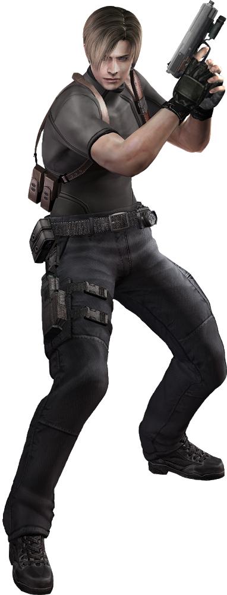

Resident Evil 4
Inicio
O inicio do jogo começa em um vilarejo onde varias pessoas foram infectadas com um parasita que controla seus corpos e mente, eles vivem como ganados, obedecendo fielmente seu mestre lorde saddle, porem o agente do governo dos estados unidos, leon kennedy esta em busca da filha do presidente que foi sequestrada pelos los iluminados, seita que controla os ganados
Pela vila tem muitos itens espalhados, munições, ervas entre outros tipos de itens para sua gameplay ficar um pouco mais dinamica
Meio
No meio do jogo temos o cenario do castelo, onde entendemos um pouco mais das origens do parasita las plagas, parasita esse que é usado para controlas os ganados da vila el pueblo, quando avançamos pelo castelo encontramos varios tipos de inimigos diferentes, todos com suas peculiariedas e dificuldades para varios tipos de jogadores
O castelo é repleto de armadilhas e controlado por ramon salazar lider do castelo
Fim
A ultima parte do jogo é a ilha, parte essa que é usada pela seita para se armarem para uma especie de guerra contra o governo americano, assim com o intuito de controlar o mundo usando o parasita las plagas, lorde saddle controla todos os seus subordinados
A ilha é cheia de armadilhas e inimigos mortais que carregam varios tipos de armas pesadas, principalmente misseis ou outros tipos de armamento